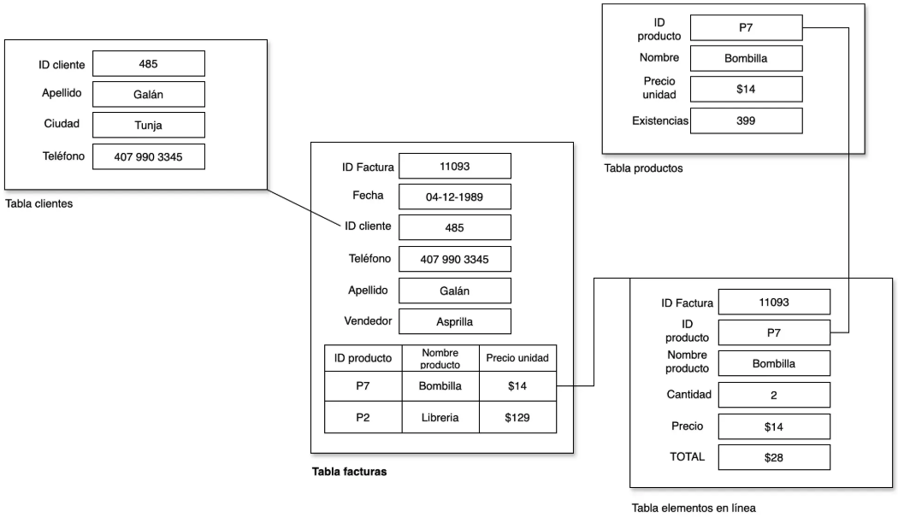

Guía 822: Jerarquía de datos¶
|
|

Exploración Estructuración Actividad práctica Transferencia
Temática: Jerarquía de datos.
Objetivo de aprendizaje: Comprender la diferencia entre datos, información e identificar los elementos de la Jerarquía de datos.
DESEMPEÑO: Identifica los elementos que componen la jerarquía de datos (bit, byte, carácter, dato, registro, tabla, base de datos) y reconoce la diferencia fundamental entre datos e información. Aplica estos conceptos correctamente al organizar registros en tablas sencillas.
Componente: Naturaleza y Evolución de la T&I.
Competencia: Relaciono saberes, conocimientos tecnológicos e informáticos con los conocimientos de otras disciplinas.
Evidencia de aprendizaje: Comprendo los principios y conocimientos tecnológicos e informáticos que hacen posible el funcionamiento de productos tecnológicos actuales.
Actividades desarrolladas en su totalidad.
Participación en clase.
Explicación clara de conceptos.
Argumentación de ideas.
Cumplimiento de las reglas del aula.
Plan de refuerzo 02.pdf Descargar
Mensaje del autor¶
“En esta guía, el estudiante comprenderá la diferencia entre datos e información, entendiendo cómo un conjunto de registros estructurados cobra significado para guiar la toma de decisiones. Al identificar los elementos de la jerarquía de datos, el estudiante estará dando el primer paso para dominar el lenguaje que emula el pensamiento humano y da vida a la tecnología actual.”
—Camilo Fonseca
Datos Vs Información¶
A continuación se definen los conceptos de datos e información para identificar su diferencia.
¿Qué son los datos?¶
[1] Los datos son cualquier cantidad, valor o hecho SIN ORGANIZAR, SIN ANALIZAR o SIN PROCESAR.
“Los datos NO ESPECIFICAN significado alguno”.
Ejemplo de datos:
rojo
llueve
Alexa
33cm
5kg
$1,000,000.00
¿Qué es la información?¶
[1] La información es el conjunto de datos organizados, analizados y procesados que tienen significado para las personas.
“La información tiene contexto y significado”.
Ejemplo de información:
El carro del ingeniero es de color rojo.
En el campo llueve, mientras que en la ciudad no lo está.
El nombre de la IA de AMAZON es Alexa.
La hoja tiene una longitud de 33cm.
Para le receta se necesitan 5kg de carne de res.
Contando los gastos, al usuario le quedó un saldo de $1,000,000.00 COP.
Jerarquía de datos¶
[2] La Jerarquía de datos es una forma de clasificar la información. La jerarquía de datos se compone de los siguientes elementos organizados así:
A continuación se muestra la definición de cada uno de los elementos (ordenados de MENOR a MAYOR) que componen la jerarquía de datos:
bit¶
Un bit es la unidad básica de información en informática. Es como un interruptor que puede estar en dos estados: encendido representado por 1 o apagado representado por 0.
¿Cómo se representa un bit?
Imagine una bombilla. Puede estar encendida o apagada. Un bit es como esa bombilla, solo que en vez de luz, representa un valor digital.
1 o 0
Byte (8 bits)¶
Un byte es un grupo de 8 bits que trabajan juntos.
“Un Byte, es como si tuviera 8 bombillas que pueden estar encendidas o apagadas, y cada combinación representa un valor diferente”.
Por ejemplo, un byte (8bits) puede representar un carácter como la letra “A”, un número como “255”, o incluso un símbolo como “#”. Por ejemplo:
10010101representa A11111111representa 25510000101representa #
Carácter¶
Son representaciones de bytes.
Un carácter es como una “letra” o un “símbolo” que se ve en pantalla. Es una unidad lógica que representa un elemento individual de texto, como una letra, un número, un signo de puntuación o un espacio en blanco.
A, c, #, X, 255, 3, _
Dato¶
Los datos se componen de caracteres.
Es un atributo codificado entendible por un sistema de información. Se puede manejar y se puede comparar. Por ejemplo:
CAMILO, ROJO, 33°, 23 , $33.000,999, TRUE
Registro¶
Un registro es un conjunto de campos en donde cada campo almacena un dato y en donde todos los datos pertenecen a un solo ente informático. Por ejemplo:
ID |
Nombre |
Apellido |
Edad |
Grado |
00 |
Camilo |
Fonseca |
16 |
11 |
Tabla¶
Una tabla es un conjunto de registros que tienen la misma estructura y que pueden ser manejados como una sola unidad.
“Todo REGISTRO debe tener un ID para poder identificar el registro como único”.
Por ejemplo:
ID |
Nombre |
Apellido |
Edad |
00 |
Camilo |
Fonseca |
36 |
01 |
John |
Kennedy |
16 |
02 |
Daniel |
Lopez |
19 |
03 |
Luis |
Ruiz |
23 |
Base de datos¶
Es un conjunto de tablas técnicamente organizadas.
“Una base de datos esta compuesta por varias tablas relacionadas”.
Por ejemplo:
|
ID |
Nombre |
Apellido |
Dirección curso |
00 |
Saul |
Duarte |
10 |
01 |
Dioselina |
Mena |
11 |
02 |
Julian |
Fonseca |
8 |
ID |
ID estudiante |
Nombre |
Apellido |
ID docente |
Director curso |
00 |
01 |
John |
Díaz |
01 |
Dioselina |
01 |
02 |
Daniel |
Lopez |
01 |
Dioselina |
A00: Introducción (5%)¶
Exploración
Transcriba en su cuaderno el objetivo, las orientaciones curriculares y los criterios de evaluación de la presente guía.
Lea el mensaje del autor y en su cuaderno con sus palabras responda:
¿En que se diferencian los datos de la información?
A01: Taller (15%)¶
Estructuración
En su cuaderno responda las siguientes preguntas:
¿Cuál es la diferencia entre los datos e información?
¿Podría existir la información sin datos? ¿Por qué?
¿Podría existir los datos sin información? ¿Por qué?
En su cuaderno escriba 10 ejemplos de DATOS y luego transfórmelos en INFORMACIÓN. Tenga en cuenta lo siguiente:
Al momento de transformar los datos a información indicar:
Contexto.
Uso del dato.
Consecuencia.
Usar 5 datos cualitativos.
Usar 5 datos cuantitativos.
Ejemplo¶ Datos
Información
vacío
“El agua fue bebida por el ciclista. El vaso ahora está vacío. Es necesario volver a llenar”.
11
“En una hora abren las puertas del colegio. Son las 11 de la mañana. Llegaré tarde”.
En su cuaderno responda las siguientes preguntas:
¿Qué es la Jerarquía de datos?
Con la Jerarquía de datos, ¿Es posible también convertir los datos en INFORMACIÓN? ¿Por qué?
En su cuaderno complete la siguiente tabla:
Elemento
Descripción
Ejemplo
bit
Byte
Carácter
Dato
Registro
Tabla
Base de datos
DIBUJE la siguiente gráfica en su cuaderno y en cada anillo ubique un elemento de la Jerarquía de datos:

Anillo Jerarquía de datos¶ |
DIBUJE el siguiente gráfico en su cuaderno:

EJEMPLO Jerarquía de datos¶
Acorde al gráfico anterior, en su cuaderno responda:
¿Qué elementos de la jerarquía de datos hacen falta y por qué?
¿Cuantas tablas hay?
¿Cuáles son los registros?
¿Cuáles son los datos?
¿Cuáles son los carácteres?
¿Cuáles son los Bytes?
¿Cuáles son los bits?
A02: Trabajo con tablas (20%)¶
Actividad práctica
En su cuaderno (de forma horizontal) realice una tabla de 5 registros de sus compañeros con los siguientes campos (invente los datos):
|
Advertencia
Los datos de Edad, Curso de Ingreso, Año de Ingreso y Año de Egreso deben tener lógica.
Construya el correo electrónico del estudiante y agregarlo en la siguiente tabla, teniendo en cuenta la siguiente estructura (ignore los paréntesis):
|
En una hoja de su cuaderno (de forma horizontal), dibuje la siguiente base de datos:

EJEMPLO Base de datos¶
Acorde a la base de datos, en su cuaderno responda las siguientes preguntas:
¿Cuál sería el nombre de la base de datos y por qué?
¿Cuantas tablas hay en la base de datos? (colocar el nombre de cada tabla)
¿Cuantos registros hay por cada tabla?
¿Cuantos datos hay por cada registro de cada tabla?
En la base de datos (dibujada en su cuaderno), identifique las tablas, registros y los datos.
Con sus palabras, en su cuaderno explique cómo esta compuesta la Tabla facturas.
En su cuaderno, cree un nuevo registro para la Tabla clientes.
En su cuaderno, cree un nuevo registro para la Tabla productos.
Con los nuevos registros Tabla clientes y Tabla productos, ahora cree una nueva base de datos compuesta por la Tabla facturas y la Tabla elementos en línea.
{kind=link}
A03: Examen escrito (60%)¶
Transferencia
TIEMPO |
29 minutos |
PREGUNTAS |
10 |
OBJETIVO |
Comprobar conocimientos adquiridos. |
INSTRUCCIONES |
Cuadernos y celulares guardados. Solo se permite hoja, lapiz y borrador. |
Posibles preguntas
¿Cómo se define un bit y cuáles son sus dos posibles estados?
Explique la analogía de la bombilla utilizada para comprender el funcionamiento de un bit.
¿Cuántos bits conforman un BYTE y por qué es importante esta agrupación?
Si un BYTE puede representar una letra, un número o un símbolo, ¿Cómo se logra esto mediante la combinación de 8 bits? De un ejemplo.
¿Cuál es la diferencia fundamental entre un BYTE y un carácter?
Defina qué es un carácter desde la perspectiva de la interfaz de usuario.
¿Qué se entiende por Dato dentro del contexto de los sistemas de información?
¿Por qué se dice que los datos son atributos codificados?
Mencione 10 ejemplos de datos.
¿Cuál es la función principal de un “dato” dentro de la Jerarquía de datos?
Explique la relación que existe entre un dato y un registro.
¿Qué es un registro y por qué es necesario identificarlos?
Describa un escenario (ejemplo propio) de un registro que contenga al menos cuatro tipos de datos distintos.
¿Por qué es necesario que todos los datos dentro de un registro pertenezcan a un mismo ente informático?
¿Qué es una tabla y qué característica estructural debe cumplir para ser considerado como tal?
¿Qué es una base de datos y cómo se diferencia de una tabla individual?
Explique qué significa que una base de datos este compuesta por tablas relacionadas.
¿Cuál es la ventaja de utilizar tablas cruzadas en una base de datos?
Si tuviera que explicar la jerarquía de datos completa (desde el bit hasta la base de datos) a alguien que no sabe nada de informática, ¿Cómo resumiría la relación entre estos niveles?
Cree un ejemplo de una base de datos con tres tablas de mínimo 3 registros y 5 datos.